Programmazione Scientifica++: Lezione 2
Deep Learning — Neurone, MLP e Vettorizzazione
Argomenti di oggi
- Il neurone biologico e matematico
- I limiti di un neurone solo
- Multi-layer perceptron (MLP)
- Funzioni di attivazione: gradino, sigmoide, ReLU
- La vettorizzazione e le matrici
Prima del C++: la matematica
In questa lezione non scriveremo una riga di C++, e non è un rinvio: prima di costruire un software bisogna sapere quali equazioni deve calcolare. Un programma robusto che calcola l’equazione sbagliata è un programma inutile.
Oggi e nella prossima lezione ci occupiamo della teoria matematica alla base del Machine Learning: scopriremo cosa dovrà calcolare ogni strato (layer) della rete — e quindi del vostro framework — e perché il linguaggio naturale per scriverlo è l’algebra lineare.
Gli strumenti del C++ — oggetti, puntatori, polimorfismo, template, eccezioni — arrivano dalla Lezione 4 in poi, e li costruirete basandovi su queste equazioni.
Il neurone biologico
Tutto parte dal cervello umano. Un neurone biologico riceve segnali chimico-elettrici da altri neuroni tramite diramazioni chiamate dendriti.
Questi segnali non hanno tutti la stessa importanza. Alcuni eccitano il neurone, altri lo inibiscono. Se la somma complessiva dell’eccitazione supera una certa soglia, il neurone emette a sua volta un impulso elettrico, il potenziale d’azione, lungo il suo assone verso i neuroni successivi.
Dagli anni ’40 (McCulloch e Pitts, 1943) ci si chiede se questo comportamento si possa scrivere come un’equazione.
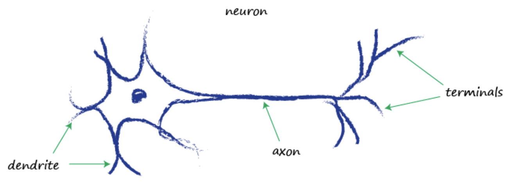
Figura da T. Rashid, Make Your Own Neural Network.
Neuroni in rete
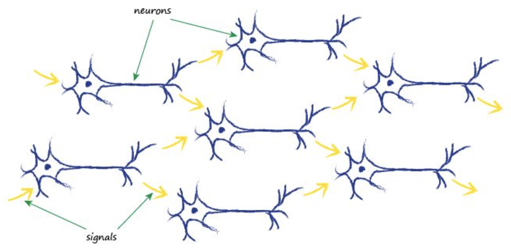
Il segnale che esce dai terminali di un neurone entra nei dendriti di altri: un neurone da solo decide poco, una rete di neuroni collegati fa il lavoro vero. È l’idea che ritroveremo nel Multi-Layer Perceptron.
Figura da T. Rashid, Make Your Own Neural Network.
Il modello matematico (perceptron)
L’unità di base di una rete neurale artificiale è il percettrone (Rosenblatt, 1958): il singolo neurone artificiale, quello che Rashid chiama semplicemente neurone o nodo. Per prima cosa calcola la somma pesata dei suoi ingressi, più il bias:
\[ z = \sum_{i=1}^{n} (w_i \cdot x_i) + b \]
- \(x_i\): il segnale in ingresso.
- \(w_i\): il peso (weight) del collegamento.
- \(b\): il bias, che “sposta” la soglia di scatto.
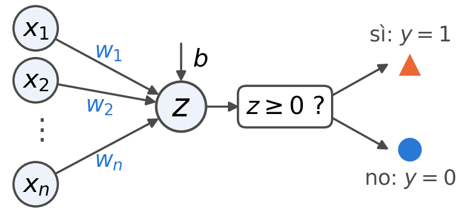
Poi decide in base a \(z\): nel percettrone di Rosenblatt l’uscita è \(y = \Theta(z)\), la funzione di Heaviside, cioè \(1\) se \(z \ge 0\) e \(0\) se \(z < 0\) (qui \(\Theta(0) = 1\)).
La combinazione lineare
Con un solo ingresso \(x\) la somma diventa: \[ z = w \cdot x + b \]
Questa è l’equazione di una retta (\(y = mx + q\)). La somma \(z\) è una funzione affine degli ingressi, una combinazione lineare più una costante (il bias). L’uscita del percettrone, che confronta \(z\) con zero, non è né lineare né affine.
Un mondo troppo semplice: confini lineari
Il neurone dice “sì” quando \(z \ge 0\) e “no” altrimenti: il confine fra le due risposte è \(z = 0\). Con un ingresso solo, se \(w \neq 0\), la retta \(z = w\,x + b\) taglia lo zero in un punto: il confine è quel punto, una soglia. Con due ingressi il confine è una retta nel piano degli ingressi; con \(n\) ingressi, un iperpiano.
Quindi un singolo neurone può risolvere solo problemi linearmente separabili: quelli per cui esiste un confine che lascia tutti i “sì” da una parte e tutti i “no” dall’altra.
Ma se i “sì” stanno in mezzo ai “no”? Una soglia sola non chiude una finestra, e una retta sola non racchiude né una fascia né un cerchio. Il percettrone fallisce.
Lo vediamo prima con un ingresso, poi con due.
Stessi pazienti, due domande
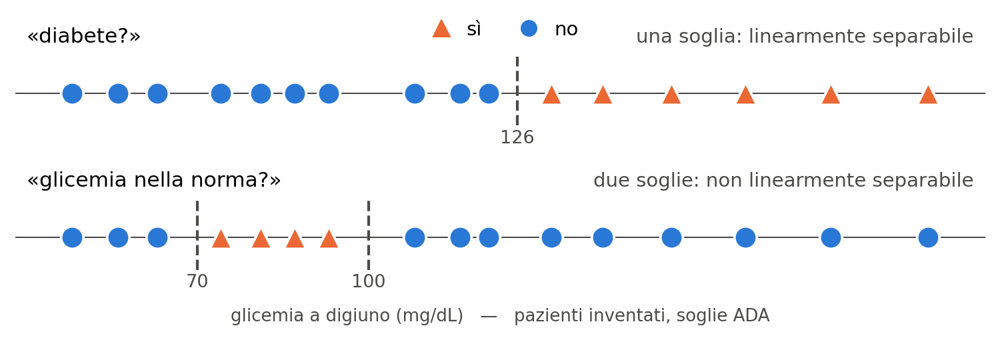
Un solo ingresso, la glicemia a digiuno, e due domande. «Diabete?», cioè un valore da 126 mg/dL in su, è una soglia: il problema è linearmente separabile. «Glicemia nella norma?» ha i sì in mezzo, perché la glicemia è un problema sia troppo bassa sia troppo alta: è una finestra, nessuna soglia sola la chiude, e il problema non è linearmente separabile. Stessi pazienti, stessi numeri: a decidere è la domanda.
Glicemia: un neurone e una rete
«Diabete?»: un neurone
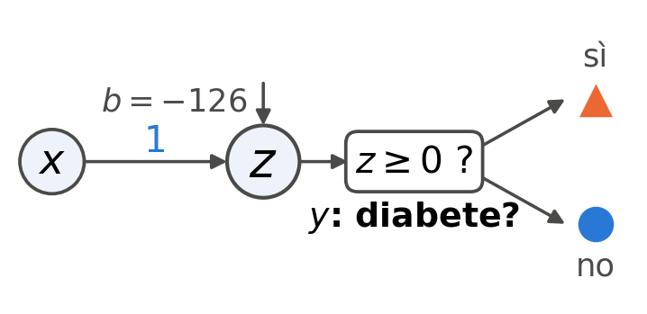
\[ z = x - 126, \quad y = \Theta(z) \]
«Nella norma?»: una rete
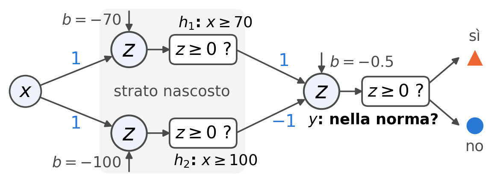
\[ \begin{aligned} h_1 &= \Theta(x - 70), \quad h_2 = \Theta(x - 100) \\ y &= \Theta(h_1 - h_2 - 0.5) \end{aligned} \]
Per la soglia basta un neurone. La finestra chiede due neuroni sullo stesso ingresso: \(h_1\) si accende da 70 in su, \(h_2\) da 100 in su. Non sono né ingressi né uscita: formano uno strato nascosto. Poiché \(h_2 \le h_1\), \(y = h_1 - h_2 = \Theta(x - 70) - \Theta(x - 100)\): la differenza di due gradini.
Coccinelle e bruchi
È l’esempio di classificazione del libro di Rashid. Di due tipi di insetti misuriamo la larghezza \(x_1\) e la lunghezza \(x_2\) (qui le misure sono inventate): le coccinelle sono larghe e corte, i bruchi stretti e lunghi.
Nella slide «La combinazione lineare» la retta dava \(z\) in funzione di \(x\). Qui, con due ingressi, la retta \(x_2 = x_1\) non calcola un numero da un altro: divide il piano in due, i bruchi sopra e le coccinelle sotto.
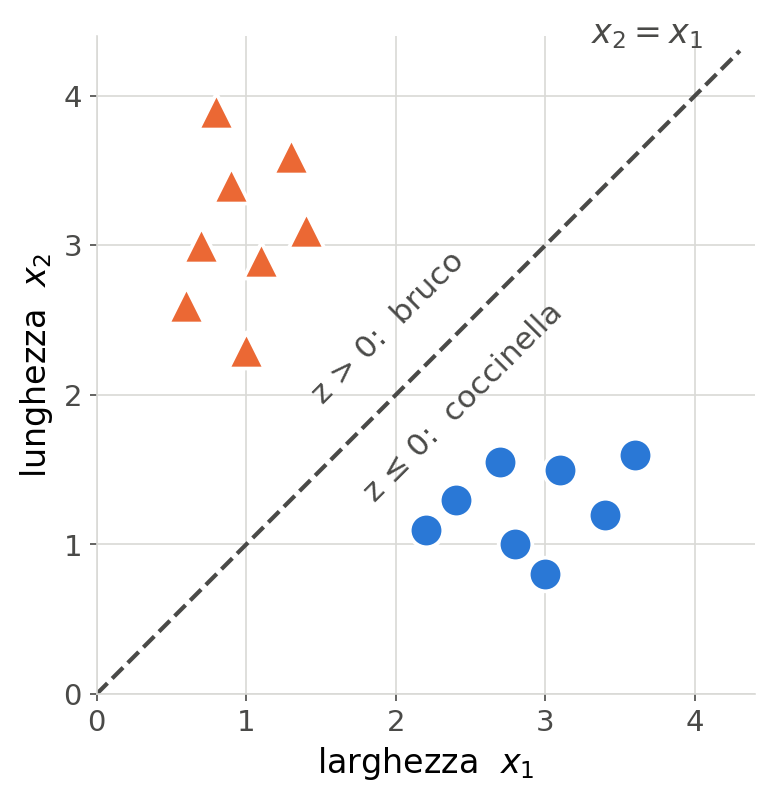
Coccinelle, cimici e bruchi
Aggiungiamo un terzo insetto, la cimice: più allungata di una coccinella, molto meno di un bruco. E cambiamo domanda: «cimice?».
Le cimici stanno in mezzo, fra le coccinelle da una parte e i bruchi dall’altra: nessuna retta le lascia da sole su un lato. Due rette sì, una fascia: il problema non è linearmente separabile.
È la finestra della glicemia, in due dimensioni: lungo \(x_2 - x_1\) vengono prima le coccinelle, poi le cimici, poi i bruchi.
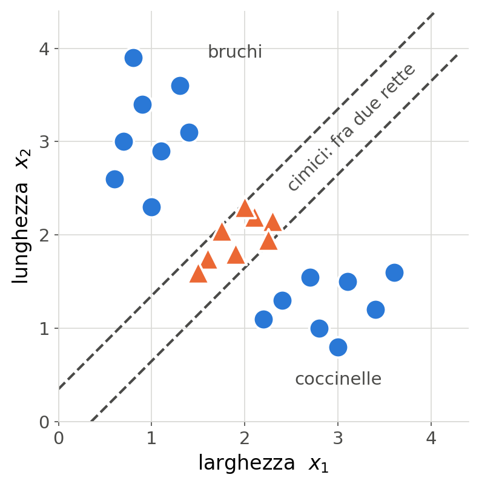
Insetti: le stesse due reti
«Bruco?»: un neurone
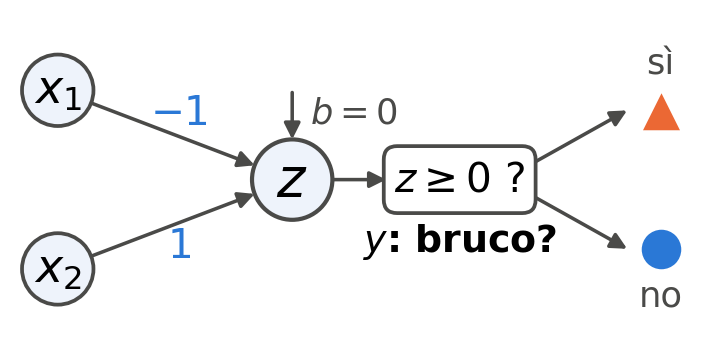
\[ z = x_2 - x_1, \quad y = \Theta(z) \]
«Cimice?»: una rete
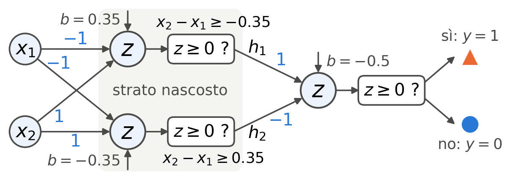
\[ \begin{aligned} h_1 &= \Theta(x_2 - x_1 + 0.35), \quad h_2 = \Theta(x_2 - x_1 - 0.35) \\ y &= \Theta(h_1 - h_2 - 0.5) \end{aligned} \]
Sono le reti della glicemia con due ingressi: pesi \(-1\) su \(x_1\) e \(1\) su \(x_2\), cioè \(x_2 - x_1\) al posto di \(x\). «Bruco?» è la retta \(x_2 = x_1\); «cimice?» sono le due rette tratteggiate della slide prima, \(x_2 - x_1 = \pm 0.35\). E di nuovo \(y = \Theta(h_1 - h_2 - 0.5) = h_1 - h_2\).
Cosa chiediamo a un neurone
Un neurone deve prendere una decisione: uscita 1 (“sì”) o 0 (“no”). Il banco di prova classico è due ingressi binari \(A, B \in \{0,1\}\) e una porta logica da realizzare.
| \(A\) | \(B\) | AND | OR | XOR |
|---|---|---|---|---|
| 0 | 0 | 0 | 0 | 0 |
| 0 | 1 | 0 | 1 | 1 |
| 1 | 0 | 0 | 1 | 1 |
| 1 | 1 | 1 | 1 | 0 |
Lo XOR (OR esclusivo) vale 1 quando i due ingressi sono diversi.
Geometricamente ogni porta è un problema di classificazione: i quattro ingressi sono i vertici di un quadrato nel piano \((A, B)\), e la porta colora ogni vertice con la sua uscita. Il neurone deve separare i vertici “1” dagli “0” — vediamo se lo strumento basta.
AND, OR e XOR nel piano
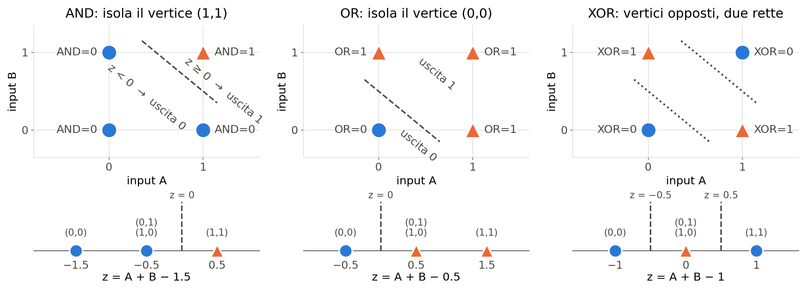
AND e OR isolano un vertice ciascuno: basta una retta, \(A + B = 1.5\) o \(A + B = 0.5\). Sotto ogni quadrato, ogni valore di \(z\) mostra i vertici a cui corrisponde: per AND e OR il sì è \(z \ge 0\), una soglia come «diabete?». Lo XOR vuole i vertici opposti \((0,1)\) e \((1,0)\), e nessuna retta li separa (Minsky e Papert, 1969: la ricerca sulle reti neurali si fermò per anni). Con \(z = A + B - 1\) i sì stanno in mezzo, \(-0.5 \le z < 0.5\): una finestra come «nella norma?», e servono due rette.
Le porte logiche con un neurone
AND: un neurone
\[ z = A + B - 1.5, \quad y = \Theta(z) \]
OR: un neurone
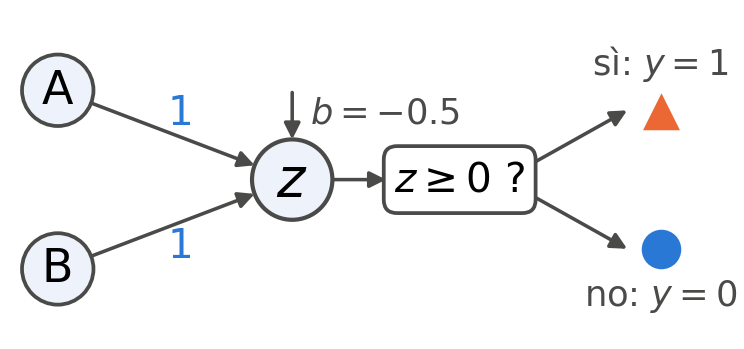
\[ z = A + B - 0.5, \quad y = \Theta(z) \]
Sono le due rette della slide prima, \(A + B = 1.5\) e \(A + B = 0.5\). AND e OR sono lo stesso neurone, e cambia solo il bias. Per lo XOR, invece, nessuna scelta dei tre numeri \(w_1, w_2, b\) funziona.
Lo XOR con uno strato nascosto
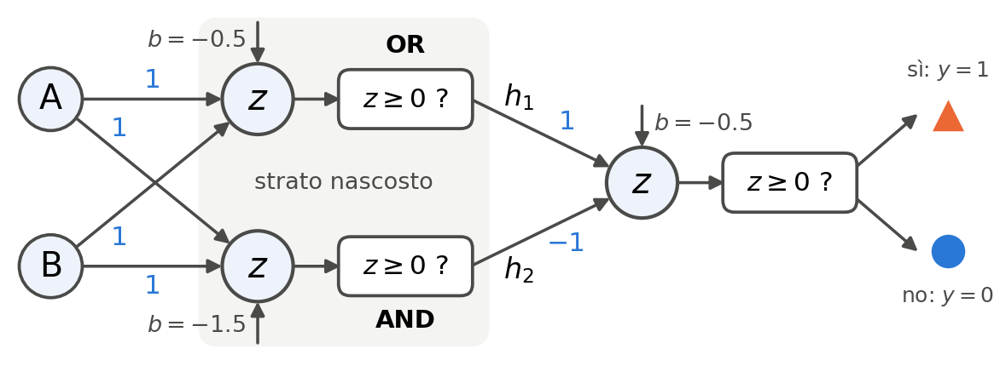
\[ h_1 = \Theta(A + B - 0.5), \quad h_2 = \Theta(A + B - 1.5), \quad y = \Theta(h_1 - h_2 - 0.5) \]
È la rete della glicemia e delle cimici, con ingressi \(A\) e \(B\): \(h_1\) è il neurone OR della slide prima, \(h_2\) il neurone AND e, poiché AND \(\le\) OR, \(y = h_1 - h_2 = \mathrm{OR} - \mathrm{AND}\), cioè lo XOR.
La non linearità sta nei riquadri \(z \ge 0\) dei neuroni nascosti. Toglieteli, e \(y\) riceverebbe \((A+B-0.5)-(A+B-1.5)\): il suo \(z\) varrebbe \(0.5\) per qualunque ingresso. Che uno strato nascosto basti non solo per lo XOR, ma per qualunque funzione continua, lo dice il teorema di approssimazione universale, fra poche slide.
Cosa vede il neurone d’uscita
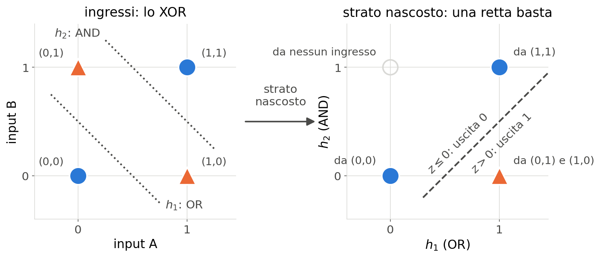
A destra ogni ingresso è disegnato nel punto \((h_1, h_2)\), cioè (OR, AND), in cui lo porta lo strato nascosto: sono gli ingressi del neurone \(y\). \((0,1)\) e \((1,0)\) finiscono nello stesso punto, e il vertice \(h_1 = 0,\ h_2 = 1\) resta vuoto: è la condizione AND \(\le\) OR della slide prima. Al neurone \(y\) restano tre punti, e una retta li separa.
La funzione di attivazione
La \(\Theta\) del percettrone usata finora è il primo esempio di funzione di attivazione \(f(z)\): la funzione non lineare che il neurone applica alla somma pesata.
La formula del neurone diventa quindi:
\[ a = f(z) = f\left(\sum_{i=1}^{n} (w_i x_i) + b\right) \]
L’output finale è \(a\) (attivazione), ed è quello che verrà passato al livello successivo.
Da sola, però, \(f\) non basta. Con un neurone solo e una \(f\) monotona (gradino, sigmoide, ReLU), il confine fra le due risposte è ancora un insieme \(z = \text{costante}\), cioè un iperpiano. La non linearità serve fra uno strato e l’altro: prima vediamo come si organizzano gli strati.
Una rete di neuroni: il multi-layer perceptron
Ora che il neurone ha una funzione di attivazione non lineare, ne prendiamo tanti e li organizziamo in strati (layer).
Nasce il Multi-Layer Perceptron (MLP) o Rete Feedforward Fully Connected.
- Input Layer: I dati puri (es. i pixel dell’immagine).
- Hidden Layers: I livelli intermedi “nascosti”. Ogni neurone è connesso a tutti i neuroni del layer precedente.
- Output Layer: La risposta finale (es. 10 neuroni per le 10 cifre da 0 a 9).
Lo XOR con uno strato nascosto era già un MLP: 2 ingressi, 2 neuroni nascosti, 1 uscita.
Architettura di base
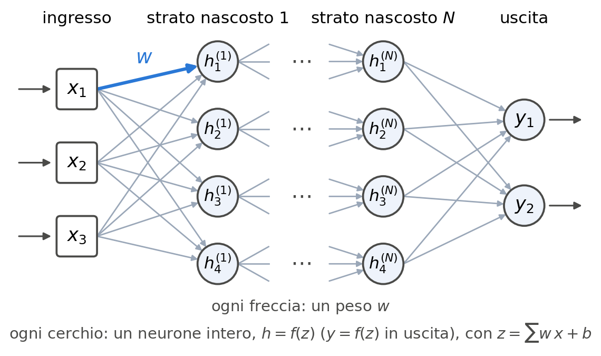
Il groviglio di frecce è l’insieme dei pesi (weights) della rete. Uno strato denso si chiama fully connected perché non manca nemmeno una freccia. Gli strati nascosti possono essere quanti si vuole: il loro numero \(N\) è la profondità della rete.
Uno strato è una matrice
Nello schema ogni neurone di uno strato legge tutti gli ingressi dello strato prima. Con \(m\) neuroni e \(n\) ingressi sono \(m\) somme pesate, \(z_j = \sum_{k=1}^{n} w_{jk}\, x_k + b_j\) con \(j = 1, \dots, m\): le righe di un solo prodotto matrice per vettore, \[ \underbrace{\begin{bmatrix} z_1 \\ \vdots \\ z_m \end{bmatrix}}_{\mathbf{z}} = \underbrace{\begin{bmatrix} w_{11} & \cdots & w_{1n} \\ \vdots & & \vdots \\ w_{m1} & \cdots & w_{mn} \end{bmatrix}}_{\mathbf{W}\ (m \times n)} \underbrace{\begin{bmatrix} x_1 \\ \vdots \\ x_n \end{bmatrix}}_{\mathbf{x}} + \underbrace{\begin{bmatrix} b_1 \\ \vdots \\ b_m \end{bmatrix}}_{\mathbf{b}} \] La riga \(j\) di \(\mathbf{W}\) sono i pesi del neurone \(j\). Lo strato intero è la mappa \(\mathbf{x} \mapsto f(\mathbf{W}\mathbf{x} + \mathbf{b})\) da \(\mathbb{R}^n\) a \(\mathbb{R}^m\), con \(f\) applicata componente per componente (per lo strato \(L\): \(\mathbf{W}^{(L)}, \mathbf{b}^{(L)}\)). Una rete è una composizione di queste mappe: da qui in poi la si studia con l’algebra lineare.
Piegare lo spazio
Senza funzione di attivazione, anche 100 strati lineari, con milioni di parametri, collassano in un solo strato lineare: il prodotto delle cento matrici, più un vettore di bias.
Senza \(f\) uno strato è la mappa affine \(\mathbf{x} \mapsto \mathbf{W}\mathbf{x} + \mathbf{b}\). Due strati:
\[ \mathbf{W}^{(2)}\left(\mathbf{W}^{(1)}\mathbf{x} + \mathbf{b}^{(1)}\right) + \mathbf{b}^{(2)} = \underbrace{\mathbf{W}^{(2)}\mathbf{W}^{(1)}}_{\mathbf{W}'}\,\mathbf{x} + \underbrace{\mathbf{W}^{(2)}\mathbf{b}^{(1)} + \mathbf{b}^{(2)}}_{\mathbf{b}'} \]
Solo una funzione di attivazione non lineare fra uno strato e l’altro impedisce il collasso: ogni strato deforma lo spazio degli ingressi, come un cambio di coordinate non lineare, finché basta un confine dritto.
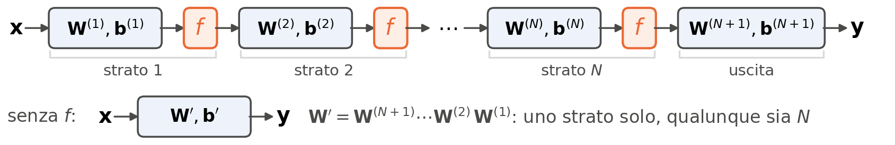
La funzione a gradino
Quale funzione \(f(z)\) usare?
Nei primi percettroni (anni ’50 e ’60) si usava la funzione a gradino (step function), cioè la \(\Theta(z)\) di Heaviside:
- Se \(z \ge 0\), l’output è \(1\) (neurone acceso).
- Se \(z < 0\), l’output è \(0\) (neurone spento).
È concettualmente semplice (come un interruttore), ma ha un limite decisivo: è costante ovunque tranne in zero, dove salta. L’apprendimento usa le derivate per correggere gli errori, e la derivata del gradino è nulla quasi ovunque: in senso distribuzionale \(\Theta'(z) = \delta(z)\), tutta concentrata in \(z = 0\). Un metodo basato sul gradiente non riceve alcun segnale per correggere i pesi.
La funzione sigmoide
Per decenni la funzione di attivazione più usata è stata la sigmoide, una funzione liscia a forma di S.
\[ f(z) = \frac{1}{1 + e^{-z}} \]
Vantaggi:
- Manda \(\mathbb{R}\) nell’intervallo \((0, 1)\): l’uscita si può leggere come una probabilità.
- È derivabile ovunque, con \(f'(z) = f(z)\,\bigl(1 - f(z)\bigr)\).
Svantaggio: per \(|z|\) grande la funzione satura e la sua derivata tende a zero (vanishing gradient): l’apprendimento rallenta fino a bloccarsi.
L’era del deep learning: ReLU
Oggi la grande maggioranza delle reti neurali usa una funzione apparentemente banale: la ReLU (Rectified Linear Unit).
\[ f(z) = \max(0, z) \]
- Se \(z\) è negativo, l’uscita è zero.
- Se \(z\) è positivo, l’uscita è \(z\) stesso.
È lineare a tratti: la non linearità sta tutta nello spigolo in zero.
Perché ReLU funziona?
La ReLU è non lineare per il taglio in zero. Per \(z > 0\) la sua derivata vale 1, quindi il gradiente passa da uno strato all’altro senza ridursi, come invece fa con la sigmoide: è uno dei motivi per cui si sono potute addestrare reti profonde (deep).
Per \(z < 0\) la derivata è zero: un neurone che resta sempre spento non impara più (dead neurons).
Inoltre \(\max(0, x)\) è un confronto: un ciclo di clock. Un esponenziale \(e^{-x}\) ne costa alcune decine. Su miliardi di attivazioni la differenza si sente.
Confronto: gradino, sigmoide e ReLU
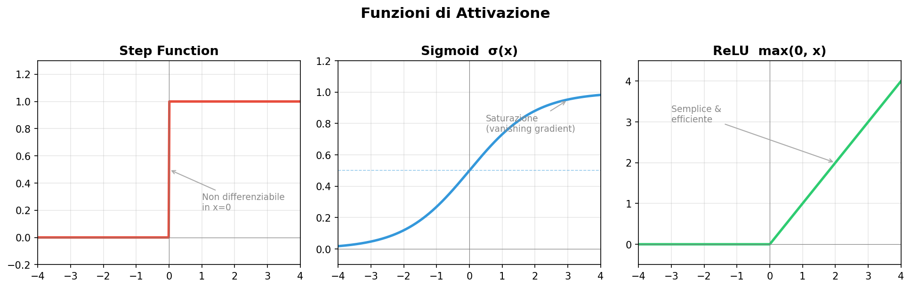
La nostra architettura: MNIST
Per MNIST: 784 → 200 → 10, un solo strato nascosto, sigmoide su entrambi. Ingressi in \([0.01,\,0.99]\), la cifra è il neurone più acceso. Basta a superare il 90%; ReLU e softmax sono varianti da progetto.
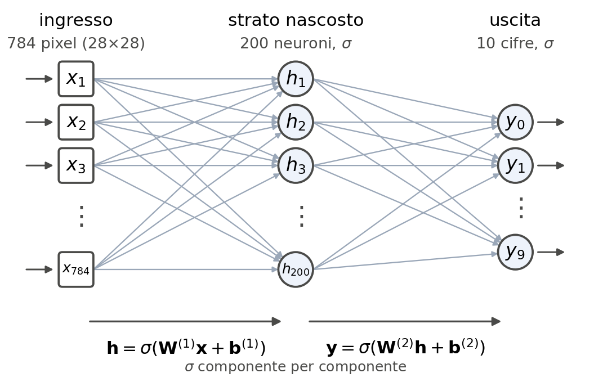
Forward propagation: strato dopo strato
Il processo con cui i dati entrano dall’Input Layer, vengono moltiplicati per i pesi, sommati, passati nelle funzioni di attivazione livello dopo livello fino ad uscire come risultato finale, si chiama Forward Propagation.
Il calcolo va solo in avanti, dall’ingresso all’uscita, senza mai tornare indietro (Feed-forward).
Resta da capire che cosa una rete del genere sia in grado di calcolare.
Vettori in ingresso, vettori in uscita
Prima di tornare alle reti, un cambio di prospettiva che vale per tutto il corso.
Un’immagine MNIST è \(28\times 28\) pixel: 784 numeri, un vettore \(\mathbf{x}\in\mathbb{R}^{784}\). Un suono è una sequenza di campioni. Un testo diventa numeri (codici, o embedding). Un video è una pila di immagini. Qualunque oggetto, una volta digitalizzato, è un vettore.
E allora classificare — “questa immagine è un 7” — non è altro che una funzione \(f:\mathbb{R}^{784}\to\mathbb{R}^{10}\), che al vettore dei pixel associa le dieci uscite, una per cifra. Tradurre una frase, prevedere la parola successiva, diagnosticare da una radiografia: sempre una funzione che manda vettori in vettori. “Ragionare”, in questo senso, è calcolare \(f\).
Le domande diventano due, e la seconda è tutto il corso:
- Esiste una rete neurale che calcola \(f\)?
- Come si trovano i suoi pesi?
Il teorema di approssimazione universale
Alla prima domanda risponde un risultato classico dell’analisi (Cybenko 1989; Hornik 1991; Leshno et al. 1993).
Teorema. Sia \(f:K\to\mathbb{R}^M\) continua su un compatto \(K\subset\mathbb{R}^N\), e sia \(\varphi\) continua e non polinomiale (sigmoide, tanh, ReLU…). Per ogni \(\varepsilon>0\) esistono un numero \(H\) di neuroni nascosti e pesi \(\mathbf{W}^{(1)}, \mathbf{b}^{(1)}, \mathbf{W}^{(2)}\) tali che \[ F(\mathbf{x}) = \mathbf{W}^{(2)}\,\varphi\!\left(\mathbf{W}^{(1)}\mathbf{x}+\mathbf{b}^{(1)}\right), \qquad \max_{\mathbf{x}\in K}\|F(\mathbf{x})-f(\mathbf{x})\| < \varepsilon . \]
Cioè: un solo strato nascosto, abbastanza largo, approssima qualunque funzione continua con la precisione che si vuole.
L’ipotesi che conta: la non linearità
Nel teorema c’è un’ipotesi che non si può togliere: \(\varphi\) non polinomiale, in particolare non lineare.
Provate a toglierla. Se \(\varphi\) fosse lineare, \(\varphi(\mathbf{z}) = \mathbf{z}\), la rete a due strati sarebbe
\[ F(\mathbf{x}) = \mathbf{W}^{(2)}\left(\mathbf{W}^{(1)}\mathbf{x} + \mathbf{b}^{(1)}\right) = \underbrace{\mathbf{W}^{(2)}\mathbf{W}^{(1)}}_{\text{una sola matrice}}\,\mathbf{x} + \mathbf{W}^{(2)}\mathbf{b}^{(1)} , \]
cioè un percettrone a singolo strato: la composizione di due mappe lineari è lineare, e con mille strati lineari si otterrebbe sempre e solo una matrice. Saremmo di nuovo fermi allo XOR.
È la non linearità fra gli strati a dare alla composizione più potere dei suoi pezzi: per questo nel Lab 07 ogni strato lineare (nel vostro framework, un DenseLayer) sarà seguito da uno strato di attivazione. Le \(\varphi\) viste poche slide fa non erano un dettaglio: erano la condizione perché tutto questo funzioni.
Cosa il teorema non dice
In pratica: se il compito si può scrivere come una funzione continua su un dominio limitato — riconoscere una voce, guidare un’auto, leggere una radiografia — esiste una configurazione di pesi che la approssima con la precisione voluta.
Ma il teorema è di esistenza, non di costruzione, e tace su tre cose:
- quanti neuroni nascosti servono: \(H\) può essere enorme, e in pratica conviene più strati stretti che uno solo larghissimo (è il “deep” di Deep Learning);
- come trovare i pesi: il teorema non dà nessun algoritmo. Questo è il lavoro della Backpropagation, la prossima lezione;
- come si comporta la rete sui dati che non ha visto: approssimare \(f\) sui dati di addestramento non garantisce nulla altrove. È il problema della generalizzazione: nel Lab 14 misurerete la performance su un test set separato, e nel Lab 15, addestrando su pochi esempi, vedrete la rete fare il 99% su quelli visti e l’85% sugli altri (overfitting).
Il problema computazionale (i cicli for)
Fermiamoci un momento e scriviamo la forward propagation nel modo più diretto.
Per ogni neurone \(i\) del layer \(L\) va calcolato \(z_i = \sum_j w_{ij}\,x_j + b_i\), dove gli \(x_j\) sono le uscite del layer \(L-1\). In C++:
Vi sembra un buon codice?
Il costo del codice ingenuo
Le reti usate in pratica (per esempio GPT o ResNet) hanno migliaia di neuroni per layer.
Un layer da 4000 neuroni connesso a un layer da 4000 neuroni significa: \(4000 \times 4000 = 16.000.000\) di moltiplicazioni all’interno di un doppio ciclo for. Immaginate di ripeterlo per 100 layer.
I cicli for in C++ sono sequenziali. Il processore fa la prima moltiplicazione, aspetta che finisca, fa la seconda, aspetta, fa la terza. E l’addestramento ripete questo calcolo su ogni esempio, più e più volte: ci vuole moltissimo tempo.
Dai cicli alle matrici
Per ridurre i tempi di calcolo si trattano i neuroni di uno strato non uno alla volta, ma tutti insieme, come vettori e matrici.
Invece di calcolare l’output del “Neurone 1” e poi del “Neurone 2”, calcoleremo l’output di tutto lo strato insieme.
Questo processo di astrazione matematica si chiama vettorizzazione.
La vettorizzazione (concetto)
Immaginate che il layer precedente abbia emesso tre output (attivazioni). Li impiliamo in un vettore colonna (una matrice di dimensione \(3 \times 1\)) che chiameremo \(\mathbf{x}\).
\[ \mathbf{x} = \begin{bmatrix} 1.2 \\ -0.5 \\ 0.8 \end{bmatrix} \]
Immaginiamo che il nostro layer abbia 2 neuroni, e che ognuno abbia il suo bias. Li mettiamo nel vettore colonna \(\mathbf{b}\) (dimensione \(2 \times 1\)).
\[ \mathbf{b} = \begin{bmatrix} 0.1 \\ -0.2 \end{bmatrix} \]
Lo schema della rete
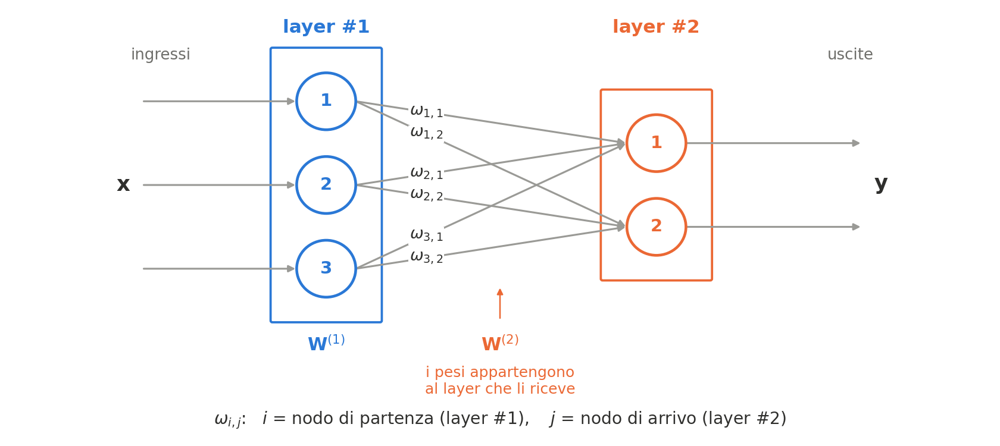
Lo stesso esempio di prima — tre ingressi, due neuroni — visto come circuito: sei pesi, uno per freccia. \(\omega_{i,j}\) collega l’ingresso \(i\) al neurone \(j\): primo indice la partenza, secondo l’arrivo, come nel libro di Rashid. Pesi e bias appartengono allo strato che li riceve: nel codice sarà così anche per DenseLayer.
La matrice dei pesi (W)
Restano i pesi. Ogni neurone del nostro strato ha 3 frecce in entrata (provenienti da \(\mathbf{x}\)). Dato che abbiamo 2 neuroni, in totale ci sono 6 pesi.
Li organizziamo, come in «Uno strato è una matrice», in una matrice \(\mathbf{W}\) di dimensione \(2 \times 3\): \(m = 2\) neuroni, \(n = 3\) ingressi.
\[ \mathbf{W} = \begin{bmatrix} w_{11} & w_{12} & w_{13} \\ w_{21} & w_{22} & w_{23} \end{bmatrix} \] Ogni riga di questa matrice rappresenta tutti i pesi appartenenti a un singolo neurone del nostro strato: \(w_{jk}\) è il peso con cui il neurone \(j\) legge l’ingresso \(k\).
Nota
Attenzione all’ordine degli indici. Nello schema di prima (e nel libro di Rashid) \(\omega_{i,j}\) va dalla partenza \(i\) all’arrivo \(j\): se \(\Omega\) è la matrice degli \(\omega_{i,j}\), quella che serve per moltiplicare è la sua trasposta, \(\mathbf{W} = \Omega^{T}\), con la riga sul neurone d’arrivo (\(w_{jk} = \omega_{k,j}\)). È la matrice che Rashid scrive in \(X = W \cdot I\) (prima riga \(\omega_{1,1}, \omega_{2,1}\)), ed è per questo che nel codice si chiamerà Wt.
Lo strato in forma matriciale
Con il prodotto righe per colonne, i due cicli for annidati diventano una sola espressione:
\[ \mathbf{z} = \mathbf{W} \cdot \mathbf{x} + \mathbf{b} \]
Il risultato è un vettore colonna \(\mathbf{z}\) di dimensione \(2 \times 1\), con le \(z\) dei due neuroni.
\[ \begin{bmatrix} z_1 \\ z_2 \end{bmatrix} = \begin{bmatrix} w_{11} & w_{12} & w_{13} \\ w_{21} & w_{22} & w_{23} \end{bmatrix} \cdot \begin{bmatrix} x_1 \\ x_2 \\ x_3 \end{bmatrix} + \begin{bmatrix} b_1 \\ b_2 \end{bmatrix} \]
Il vantaggio hardware (SIMD & GPU)
Perché scrivere \(\mathbf{W} \cdot \mathbf{x}\) è molto più veloce dei cicli for?
Perché il prodotto righe per colonne è parallelizzabile: il calcolo di un neurone non dipende da quello degli altri.
Le CPU moderne hanno istruzioni SIMD (Single Instruction Multiple Data: AVX su x86, NEON su ARM) che eseguono la stessa operazione su più numeri insieme: con AVX2, 4 double o 8 float per istruzione. Le GPU hanno migliaia di unità di calcolo che lavorano in parallelo.
C++ e librerie ottimizzate (Eigen / BLAS)
In C++ la moltiplicazione tra matrici non si scrive a mano.
Nel progetto userete una libreria di algebra lineare di livello industriale, Eigen (o BLAS/LAPACK): basta definire due oggetti Eigen::Matrix e moltiplicarli con l’operatore *.
Il codice è più leggibile e molto più veloce: lo misurerete in laboratorio.
L’equazione ricorsiva finale
L’ultimo passo per ottenere i valori da inviare allo strato successivo è applicare la funzione di attivazione a tutto il vettore colonna.
\[ \mathbf{a}^{(L)} = f\left( \mathbf{W}^{(L)} \mathbf{a}^{(L-1)} + \mathbf{b}^{(L)} \right) \]
È tutta la forward propagation di un MLP.
- Prendi l’input (\(\mathbf{a}^{(L-1)}\)), moltiplica per i pesi (\(\mathbf{W}\)), somma il bias (\(\mathbf{b}\)).
- Applica la funzione di attivazione (\(f\) — per noi la sigmoide).
- Invia allo strato successivo, e ripeti.
Esercizio in classe (15 min): la rete a mano
Niente computer: carta, penna, e il telefono per l’esponenziale. Una rete a tre ingressi e tre nodi:
\[\mathbf{W} = \begin{pmatrix} 0.9 & 0.3 & 0.4 \\ 0.2 & 0.8 & 0.2 \\ 0.1 & 0.5 & 0.6\end{pmatrix} \qquad \mathbf{x} = \begin{pmatrix} 0.9 \\ 0.1 \\ 0.8 \end{pmatrix}\]
- Calcolate \(\mathbf{z} = \mathbf{W}\mathbf{x}\) a mano (senza bias, come nel libro).
- Applicate la sigmoide a ciascuna componente: \(\sigma(z) = 1/(1+e^{-z})\).
- Contate quante moltiplicazioni avete fatto. Poi rifate il conto per la rete di MNIST, \(784 \to 200 \to 10\), e per un’epoca su 60.000 immagini.
I numeri sono quelli dell’esempio svolto nel libro di Rashid: chi ce l’ha può confrontare.
Esercizio: soluzione
\[z_1 = 0.9\cdot0.9 + 0.3\cdot0.1 + 0.4\cdot0.8 = 1.16\] \[z_2 = 0.2\cdot0.9 + 0.8\cdot0.1 + 0.2\cdot0.8 = 0.42\] \[z_3 = 0.1\cdot0.9 + 0.5\cdot0.1 + 0.6\cdot0.8 = 0.62\]
\[\sigma(\mathbf{z}) = (0.761,\; 0.603,\; 0.650)\]
E il conto che conta
| rete | moltiplicazioni |
|---|---|
| la nostra \(3\times3\) | 9 |
| MNIST, primo strato \(784\to200\) | 156.800 |
| secondo strato \(200\to10\) | 2.000 |
| una sola immagine | 158.800 |
| un’epoca su 60.000 immagini | \(9{,}5\cdot10^9\) |
Importante
Nove moltiplicazioni le avete fatte a mano in un minuto. Quasi dieci miliardi sono un’epoca, e le epoche sono decine. Ecco perché il ciclo for ingenuo non basta. Le moltiplicazioni restano le stesse: scritte come una sola operazione matriciale (slide «Lo strato in forma matriciale»), le esegue in parallelo una libreria ottimizzata (slide «Il vantaggio hardware»).
Quesiti finali
1. Tre strati per niente. Immaginate tre strati densi, ciascuno con la sua matrice di pesi \(\mathbf{W}^{(L)}\) e il suo vettore di bias \(\mathbf{b}^{(L)}\), e nessuna funzione di attivazione fra uno e l’altro. Scrivete la rete come un solo strato \(\mathbf{x} \mapsto \mathbf{W}'\mathbf{x} + \mathbf{b}'\): quanto valgono \(\mathbf{W}'\) e \(\mathbf{b}'\)?
2. (aperta) Perché “deep” e non “wide”? Il teorema di approssimazione universale dice che uno strato nascosto basta per qualunque funzione. E allora perché il campo si chiama deep learning? Provate a rendere quantitativo l’argomento della slide «Cosa il teorema non dice»: confrontate 784 → 200 → 10 con 784 → 100 → 100 → 10, contate i pesi dell’una e dell’altra, e chiedetevi quante “pieghe” sa fare ciascuna.
Quesiti finali: le risposte
1. Applicando due volte la formula di «Piegare lo spazio»: \(\mathbf{W}' = \mathbf{W}^{(3)}\mathbf{W}^{(2)}\mathbf{W}^{(1)}\) e \(\mathbf{b}' = \mathbf{W}^{(3)}\mathbf{W}^{(2)}\mathbf{b}^{(1)} + \mathbf{W}^{(3)}\mathbf{b}^{(2)} + \mathbf{b}^{(3)}\). Per induzione vale per qualunque numero di strati: senza non linearità la profondità non aggiunge nulla, è lo stesso modello con più parametri e più calcoli.
2. Traccia: \(784 \times 200 + 200 \times 10 = 158.800\) pesi contro \(784 \times 100 + 100 \times 100 + 100 \times 10 = 89.400\). La rete profonda costa poco più della metà e, a parità di pesi, di solito rende meglio: ogni strato ripiega lo spazio già ripiegato dal precedente, e le regioni che sa distinguere crescono come un prodotto, non come una somma. Il teorema garantisce che la rete larga esiste; non dice che sia quella conveniente, né che la troviate.